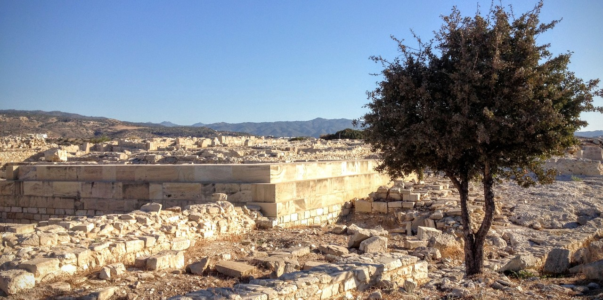

11 Artefacts and anachronisms

I have given nearly 50 talks on biblical archaeology. One was entitled “Bible skeletons and fingerprints” in which I described some recent archaeological finds that supported and illuminated the biblical record. I showed photographs of the ossuary of Caiaphas from the first century AD, containing a skeleton of a 60 year old man — probably Caiaphas the high priest mentioned in the gospels. I covered the tiny clay seals that were found in Jerusalem from around 586BC. One of the seals belonged to Baruch, Jeremiah’s scribe, and contained a fingerprint — probably belonging to Baruch himself. Another seal belonged to King Hezekiah, and included the image of a dung beetle, an Egyptian scarab.
My approach was to comb the archaeological literature looking for finds that had some biblical connections, interesting photographs, and that could be explained relatively simply. The talks were popular, and the audiences were receptive to anything that showed the Bible record was accurate.
I would display reconstructions of the temple in Jerusalem at the time of Jesus, and discuss where various events in the gospels might have taken place. I would show sketches of Capernaum, where Jesus is said to have lived, and discuss what his house must have been like, and how far it was from the synagogue.
I was always careful to say that archaeology could not “prove the Bible”, but it could illuminate, and sometimes support, the biblical record. For example, the Bible says that Baruch was a scribe in Jerusalem at the time of the Babylonian invasion (Jeremiah 36:4) and the archaeological record corroborates the Bible statements. The reconstructions of Herod’s temple in Jerusalem add an additional dimension to the stories of Jesus told by the gospel writers.
Provided we stick to the time of the captivity and the New Testament, there are plenty of connections between the Bible and archaeology. People and places from about 600 BC onwards are often accurately described in the Bible: Nebuchadnezzar, Cyrus, Antiochus Epiphanes, Herod the Great, Pontius Pilate, and others are mentioned, reflecting a mostly reliable history that made its way into what became the biblical books.
It is easy to lull audiences into a false sense of security by only covering those finds where the Bible and archaeology match, where there are no unpleasant contradictions, or inconvenient anachronisms. If you only discuss the cases where archaeology supports the biblical record, you can imagine that there are no contradictions or difficulties.
It was not that I was deliberately pulling the wool over the eyes of those listening to my talks. I also ignored the problems myself. I knew they existed, and I read the debates, but I reasoned that any inconsistencies between the Bible and archaeology must have a reasonable explanation, if only we had more information. So it was better to leave out those difficulties from my talks and focus on the finds where the Bible and archaeology were in agreement.
So in this chapter I would like to review some of the difficulties with archaeology, and consider whether they really can be explained.
Origins of agriculture and music
A few generations after Adam, we read about the family of Lamech:
19 Lamech took two wives for himself; the name of the first was Adah, and the name of the second was Zillah. 20 Adah gave birth to Jabal; he was the first of those who live in tents and keep livestock. 21 The name of his brother was Jubal; he was the first of all who play the harp and the flute. 22 Now Zillah also gave birth to Tubal-Cain, who heated metal and shaped all kinds of tools made of bronze and iron. The sister of Tubal-Cain was Naamah.
This is simply nonsense. Ancient flutes made from bird bone and mammoth ivory have been found in a cave in southern Germany, and dated to over 40,000 years ago.1 There are several other similar finds almost as old, and the uncertainty in the dating is only of the order of a couple of thousand years. As Jubal was the great-great-great-great-great grandson of Adam (Gen 4:17–21), and Adam was 75 generations before Jesus according to Luke 3, Jubal could not possibly have lived as long as 40,000 years ago. More like 6000–8000 years ago and that’s allowing for up to 80 years per generation.
There is also good archaeological evidence of settlements and domesticated livestock back to about 9000 BC2 and of metalworking back to about 9500 BC3. These are far too early for Jabal and Tubal-Cain to plausibly be the true originators of camping, farming and smithing.
Anachronisms in Genesis
The early books of the Old Testament show clear evidence of being written much later.
Abraham is portrayed as having camels, yet camels were not domesticated until a thousand years later4. He is said to come from “Ur of the Chaldees”, yet the city of Ur was in southern Mesopotamia and the Chaldeans did not occupy the region until about 1000 BC. At the time of Abraham, their ancestors were most likely living in mountain villages in northern Iraq.
Arameans are mentioned frequently in Genesis, but they are not mentioned in any ancient texts as a distinct ethnic group until about 1100 BC5.
Similarly, Edom is mentioned in Genesis, and there is even a genealogy and “king list” in Genesis 36. Yet archaeological evidence shows the area to have been sparsely populated before the 8th century BC, and it only appears in ancient texts after the Assyrian invasion6.
The anachronisms are understandable if Genesis was a tale written around 600 BC, describing the mythical history of Israel, but it cannot be taken seriously as narrative history.
The Exodus from Egypt and conquest of Canaan
A serious difficulty for the biblical record is the lack of archaeological evidence supporting an Israelite slave class in Egypt in the second millenium BC, or indeed at any other time.
There are some well-known reliefs from about 1450 BC depicting Semitic-looking slaves7 although these are identified in the attached inscriptions as prisoners of war from the Pharaoh’s campaigns in the south (Nubia) and north (Syria-Canaan), rather than from Israelite families that had lived in Egypt for centuries.
The problem is, the name of Israel is never used before the end of the thirteenth century BC. There are plenty of documents and inscriptions where it could have been used — there are Hyksos inscriptions, Egyptian inscriptions, and the extensive fourteenth century cuneiform archive from Tel el-Amarna containing about 400 letters describing Canaan at the time. But nothing about Israel. This has led most ancient historians to conclude that Israel did not exist at the time, and only gradually emerged as a distinct group during the thirteenth century BC.
The places in Egypt, and on the route taken by the Israelites, reflect the geography of the first millenium BC (when the text was written) rather than the second millenium BC (when the events are supposed to have taken place). Several places that are named on the Exodus route have been identified as being unoccupied at the time of the supposed wilderness wanderings.8 For example, the earliest occupation of Ezion-Geber dates from the 8th century BC,9 more than 500 years after the Exodus is said to have occurred. Similarly, the names Goshen, Pithom, Succoth, Ramesses and Kadesh Barnea all point to the geography of the first millennium rather than the second.
An even more serious omission from the archaeological record is any evidence of the Canaanite invasion. The overthrow of cities, and the displacement of one culture by another, is precisely where archaeology is at its strongest. But no matter how flexible we are with the dating, there is simply no evidence of an invasion and conquest of Canaan. Instead, the archaeological evidence shows a slow transition from an agricultural society to city-kingdoms.
Conservative Christian historians, especially James Hoffmeier10 and Kenneth Kitchen11, have valiantly attempted to marshall the evidence to support the biblical account of the Exodus, and for a long time I took comfort in their books. However, eventually the weight of evidence against the Exodus account strained my faith too far.
The alternative explanation fits the available evidence much better — that the early history of Israel described from Genesis to Deuteronomy reflects the geography and culture of a much later time, and was constructed to provide a founding myth for Israel. It is a “history” clumsily told to bolster the claims and demands of the late kings of Judah. This would explain the impossibly large numbers of people wandering in the wilderness12, the anachronistic place names given in the Exodus record, the lack of archaeological evidence for an Israelite invasion, and the lack of reference to Israel before the late 13th century BC.
The Egypt story may still contain some cultural memories, but these have been embellished and exaggerated to such an extent that it is no longer possible to recover whatever core historical details there might have been.
Babylon
Coincidentally, I’m writing these words as I fly over Babylon. Beneath me are the ruins of ziggurats, temples and palaces, mentioned in the book of Daniel. In my talks I would show illustrations of Babylon as it probably looked in its prime — the great Procession Street, the Ishtar gate, the hanging gardens of Babylon. And I would read the words of Nebuchadnezzar as reported by Daniel:
“Is not this great Babylon that I have built for a royal residence by my own mighty strength and for my majestic honor?” (Daniel 4:30)
However, I would not mention the problems — that Darius the Mede did not conquer Babylon, rather it was Cyrus the Persian (Daniel 5:31; 6:28); that there was no archaeological or historical evidence for a period of mental illness of Nebuchadnezzar (Daniel 4); that Belshazzar was never a king and was not related to Nebuchadnezzar (Daniel 5:1–2). Those details would complicate the message.
I assumed that there was a valid explanation for each of the difficulties, but that we did not have enough information to know what they were. My faith in the biblical record was strong enough that I was prepared to use the archaeological evidence to support the Bible when convenient, and I was prepared to ignore the archaeology and history when it was not convenient.
This is another case of confirmation bias. I was only using evidence to confirm what I already believed. I was not following where the evidence led.
New Testament problems
Although the later parts of the Old Testament, and much of the New Testament, are better supported archaeologically, there are still some difficulties.
Luke’s gospel says
Now in those days a decree went out from Caesar Augustus to register all the empire for taxes. This was the first registration, taken when Quirinius was governor of Syria. (Luke 2:1–2)
Quirinius is known to have been governor of Syria in AD 613, much too late for the birth of Jesus. There have been several suggested explanations: that Quirinius was an administrator for this census, but later became governor; or that some other governor started the census, but the final compilation of data was not completed until the time Quirinius was governor; or that Quirinius served as governor on two separate occasions; and so on. But none of these seem likely.
Another problem with this census is that there is no evidence that Roman rulers required people to be registered in the town of their ancestral lands. To require such a massive migration of people for the purpose of counting the population seems extremely unlikely and is unknown in any other Roman census for which we have some record.
The massacre of babies in Bethlehem is also unknown in the historical records outside the Bible. This is particularly surprising given we have a history of the time written by Josephus who otherwise took great pains to record in detail the excesses of Herod the Great, and several other massacres around the same time.
Each problem on its own can probably be explained away. But the piling up of anomalies in the biblical account makes it seem increasingly fishy.
What should we expect from history and archaeology?
Some biblical apologists are at pains to point out that the Bible should not be expected to adhere to the modern standards of historical narrative. I agree. But that does not give the biblical authors licence to make things up — like the origins of musical instruments, or the use of camels. It might excuse using later place names in the Exodus journey, but most of the other things mentioned in this chapter are not simply sloppy reporting by modern standards. Rather, they appear be part of an imagined history concocted for ideological reasons.
Besides, if we allow for exaggeration and a large dose of historical imagination, the narrative loses all power. If we cannot believe that musical instruments were first played eight generations after Adam (Genesis 4:21), why should be believe the curses described in the previous chapter? If we cannot believe that Abraham came from Ur of the Chaldees, why should we believe the promises God made to Abraham? The New Testament gospel messages hinges on these curses and promises being reliable and accurate, and once the historicity of the biblical text cannot be assumed, the gospel message cannot be believed either.
T. Higham et al. (2012). Testing models for the beginnings of the Aurignacian and the advent of figurative art and music: The radiocarbon chronology of Geißenklösterle. Journal of Human Evolution 62(6), 664–676.↩︎
R. E. Krebs and C. A. Krebs (2003). Groundbreaking scientific experiments, inventions, and discoveries of the ancient world. Westport, CT, USA: Greenwood Press, p16.↩︎
R. E. Hummel (2004). Understanding materials science: History, properties, applications. 2nd ed. New York, USA: Springer, p5.↩︎
L. Sapir-Hen and E. Ben-Yosef (2013). The introduction of domestic camels to the southern Levant: evidence from the Aravah Valley. Tel Aviv 40(2), 277–285.↩︎
N. A. Silberman and I. Finkelstein (2001). The Bible unearthed: Archaeology’s new vision of ancient Israel and the origin of its sacred texts. New York, USA: Free Press, p.39.↩︎
Silberman and Finkelstein (2001, p.40).↩︎
J. K. Hoffmeier (1997). Israel in Egypt: The evidence for the authenticity of the Exodus tradition. New York, USA: Oxford University Press, pp.112–113.↩︎
J. Van Seters (2001). ‘The geography of the Exodus’. In: The Land that I Will Show You: Essays on the history and archaeology of the ancient Near East in honor of J. Maxwell Miller. Edited by J. A. Deadman and M. P. Graham. Sheffield, England: Sheffield Academic Press, pp.255–276.↩︎
G. D. Pratico (1985). Nelson Glueck’s 1938–1940 excavations at Tell el-Kheleifeh: A reappraisal. Bulletin of the American Schools of Oriental Research 259, 1–32.↩︎
J. K. Hoffmeier (1997). Israel in Egypt: The evidence for the authenticity of the Exodus tradition. New York, USA: Oxford University Press.↩︎
K. A. Kitchen (2003). On the reliability of the Old Testament. Grand Rapids, MI, USA: W.B. Eerdmans.↩︎
According to the biblical text there were over 600,000 men of fighting age alone, so there must have been several million people involved.↩︎
Josephus Antiquities 18.1.1↩︎